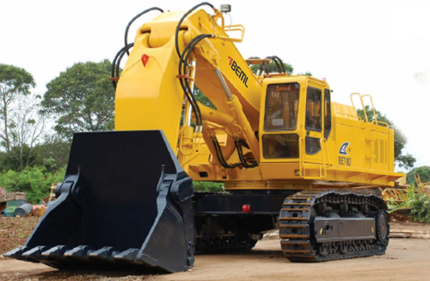

BEML BSA6D140-1 diesel engine delivers 415 HP. A direct injection combustion system and the power-efficient Positive control hydraulic system make the BE700 a real miser when it comes to fuel consumption
Three mode selection system viz. Electronic Standard and Medium-duty modes S&L for high excavation efficiency and non electronic mode M for light-duty operations. Swing holding brake facilitates smooth lifting operation on an incline. The positive control and closed loop swing system gives maximum hydraulic efficiency. The auto boom float and regeneration reduces the fuel consumption and avoid cavitations. The Boom, Arm and Bucket merge circuits and smooth compound travel and work equipment movement boosts productivity. Wide working range and larger stable undercarriage assures stable operation for maximum working performance.
Three pump hydraulic systems which consists of independently controlled variable capacity axial piston pumps for implements and closed loop swing, not only assures smooth compound movements of the work equipment, but also shortens cycle time. The open center load sensing, two loop positive control hydraulic system makes optimum use of engine power output, there by reducing hydraulic loss during operations.
Grease bathed swing pinion, sealed hinge pins on all joint section, floating seals on all rollers, tough undercarriages use job-proven bulldozer components. The BEML quality controls system is a real winner of the reliable and durable BE700.
With a centralized monitoring system within the operator's cab, the operator can instantly check machine conditions. The top cover of the machine cab can be opened easily with the aid of a torsion bar, allowing quick access to intemal components. Centralized grease points for the work equipment makes lubrication easy with grease gun.